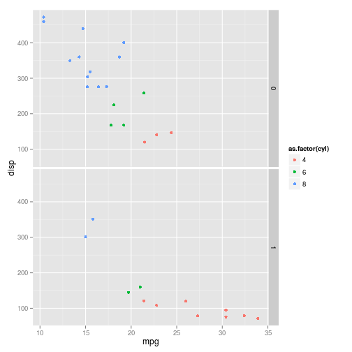
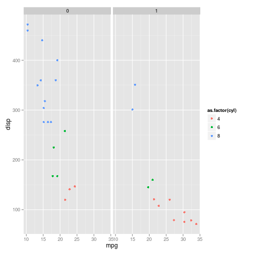

-
Aula 05 - Gráficos com estilo - ggplot2
2015-01-28
SourceO pacote ggplot2
O
ggplot2é um pacote do R voltado para a criação de gráficos estatísticos. Ele é baseado na Gramática dos Gráficos (grammar of graphics, em inglês), criado por Leland Wilkinson, que é uma resposta para a pergunta: o que é um gráfico estatístico? Resumidamente, a gramática diz que um gráfico estatístico é um mapeamento dos dados a partir de atributos estéticos (cores, formas, tamanho) de formas geométricas (pontos, linhas, barras).Para mais informações sobre a Gramática dos Gráficos, você pode consultar o livro The Grammar of graphics, escrito pelo Leland Wilkinson, ou o livro ggplot2: elegant graphics for data analysis, do Hadley Wickham.
Instalação
O
ggplot2não faz parte dos pacotes base do R. Assim, antes de usá-lo, você precisa baixar e instalar o pacote. Para isso, é necessário ter pelo menos a versão 2.8 do R, pois oggplot2não é compatível com versões anteriores.Para baixar e instalar o pacote, utilize a seguitne linha de código:
install.packages("ggplot2")Não se esqueça de carregar o pacote antes de utilizá-lo:
library(ggplot2)Construindo gráficos
A seguir, vamos discutir os aspcetos básicos para a construção de gráficos com o pacote
gglplot2. Para isso, utilizaremos o banco de dados contido no objetomtcars. Para visualizar as primeiras linhas deste banco, utilize o comando:head(mtcars)## mpg cyl disp hp drat wt qsec vs am gear carb ## Mazda RX4 21.0 6 160 110 3.90 2.620 16.46 0 1 4 4 ## Mazda RX4 Wag 21.0 6 160 110 3.90 2.875 17.02 0 1 4 4 ## Datsun 710 22.8 4 108 93 3.85 2.320 18.61 1 1 4 1 ## Hornet 4 Drive 21.4 6 258 110 3.08 3.215 19.44 1 0 3 1 ## Hornet Sportabout 18.7 8 360 175 3.15 3.440 17.02 0 0 3 2 ## Valiant 18.1 6 225 105 2.76 3.460 20.22 1 0 3 1As camadas de um gráfico
No
ggplot2, os gráficos são construídos camada por camada (ou, layers, em inglês), sendo que a primeira delas é dada pela funçãoggplot(não tem o "2"). Cada camada representa um tipo de mapeamento ou personalização do gráfico. O código abaixo é um exemplo de um gráfico bem simples, construído a partir das duas principais camadas.ggplot(data = mtcars, aes(x = disp, y = mpg)) + geom_point()
Observe que o primeiro argumento da função
ggploté um data frame. A funçãoaes()descreve como as variáveis são mapeadas em aspectos visuais de formas geométricas definidas pelos geoms. Aqui, essas formas geométricas são pontos, selecionados pela funçãogeom_point(), gerando, assim, um gráfico de dispersão. A combinação dessas duas camadas define o tipo de gráfico que você deseja construir.Aesthetics
A primeira camada de um gráfico deve indicar a relação entre os dados e cada aspecto visual do gráfico, como qual variável será representada no eixo x, qual será representada no eixo y, a cor e o tamanho dos componentes geométricos etc. Os aspectos que podem ou devem ser mapeados depende do tipo de gráfico que você deseja fazer.
No exemplo acima, atribuímos aspectos de posição: ao eixo y mapeamos a variável
mpg(milhas por galão) e ao eixo x a variáveldisp(cilindradas). Outro aspecto que pode ser mapeado nesse gráfico é a cor dos pontosggplot(data = mtcars, aes(x = disp, y = mpg, colour = as.factor(am))) + geom_point()
Agora, a variável
am(tipo de transmissão) foi mapeada à cor dos pontos, sendo que pontos vermelhos correspondem à transmissão automática (valor 0) e pontos azuis à transmissão manual (valor 1). Observe que inserimos a variávelamcomo um fator, pois temos interesse apenas nos valores "0" e "1". No entanto, tambem podemos mapear uma variável contínua à cor dos pontos:ggplot(mtcars, aes(x = disp, y = mpg, colour = cyl)) + geom_point()
Aqui, o número de cilindros,
cyl, é representado pela tonalidade da cor azul.Nota: por default, a legenda é insirida no gráfico automaticamente.
Também podemos mapear o tamanho dos pontos à uma variável de interesse:
ggplot(mtcars, aes(x = disp, y = mpg, colour = cyl, size = wt)) + geom_point()
Exercício: pesquisar mais aspectos que podem ser alterados no gráfico de dispersão.
Geoms
Os geoms definem qual forma geométrica será utilizada para a visualização dos dados no gráfico. Como já vimos, a função
geom_point()gera gráficos de dispersão transformando pares (x,y) em pontos. Veja a seguir outros geoms bastante utilizados:- geom_line: para retas definidas por pares (x,y)
- geom_abline: para retas definidas por um intercepto e uma inclinação
- geom_hline: para retas horizontais
- geom_boxplot: para boxplots
- geom_histogram: para histogramas
- geom_density: para densidades
- geom_area: para áreas
- geom_bar: para barras
Veja a seguir como é fácil gerar diversos gráficos diferentes utilizando a mesma estrutura do gráfico de dispersão acima:
ggplot(mtcars, aes(x = as.factor(cyl), y = mpg)) + geom_boxplot()
ggplot(mtcars, aes(x = mpg)) + geom_histogram()## stat_bin: binwidth defaulted to range/30. Use 'binwidth = x' to adjust this.
ggplot(mtcars, aes(x = as.factor(cyl))) + geom_bar()
Para fazer um boxplot para cada grupo, precisamos passar para o aspecto x do gráfico uma variável do tipo fator.
Personalizando os gráficos
Cores
O aspecto colour do boxplot, muda a cor do contorno. Para mudar o preenchimento, basta usar o
fill.ggplot(mtcars, aes(x = as.factor(cyl), y = mpg, colour = as.factor(cyl))) + geom_boxplot()
ggplot(mtcars, aes(x = as.factor(cyl), y = mpg, fill = as.factor(cyl))) + geom_boxplot()
Você pode também mudar a cor dos objetos sem mapeá-la a uma variável. Para isso, observe que os aspectos
colourefillsão especificados fora doaes().ggplot(mtcars, aes(x = as.factor(cyl), y = mpg)) + geom_boxplot(color = "red", fill = "pink")
Eixos
Para alterar os labels dos eixos acrescentamos as funções
xlab()ouylab().ggplot(mtcars, aes(x = mpg)) + geom_histogram() + xlab("Milhas por galão") + ylab("Frequência")## stat_bin: binwidth defaulted to range/30. Use 'binwidth = x' to adjust this.
Para alterar os limites dos gráficos usamos as funções
xlim()eylim().ggplot(mtcars, aes(x = mpg)) + geom_histogram() + xlab("Milhas por galão") + ylab("Frequência") + xlim(c(0, 40)) + ylim(c(0,8))## stat_bin: binwidth defaulted to range/30. Use 'binwidth = x' to adjust this.
Legendas
A legenda de um gráfico pode ser facilmente personalizada.
Para trocar o label da leganda:
ggplot(mtcars, aes(x = as.factor(cyl), fill = as.factor(cyl))) + geom_bar() + labs(fill = "cyl")
Para trocar a posição da legenda:
ggplot(mtcars, aes(x = as.factor(cyl), fill = as.factor(cyl))) + geom_bar() + labs(fill = "cyl") + theme(legend.position="top")
Para retirar a legenda:
ggplot(mtcars, aes(x = as.factor(cyl), fill = as.factor(cyl))) + geom_bar() + guides(fill=FALSE)
Veja mais opções de personalização aqui!/)
Facets
Outra funcionalidade muito importante do ggplot é o uso de facets.
ggplot(mtcars, aes(x = mpg, y = disp, colour = as.factor(cyl))) + geom_point() + facet_grid(am~.)
Podemos colocar os graficos lado a lado também:
ggplot(mtcars, aes(x = mpg, y = disp, colour = as.factor(cyl))) + geom_point() + facet_grid(.~am)